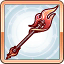
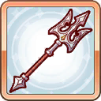
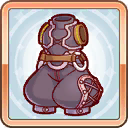
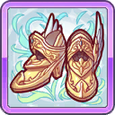

목차
캐릭터 프로필
|
콧코로
コッコロ |
|
| 신장 | 140cm |
| 체중 | 35kg |
| 나이 | 11세 |
| 생일 | 5월 11일 |
| 혈액형 | B형 |
| 종족 | 엘프 |
| 길드 | 미식전 |
| 취미 | 명상, 동식물 기르기 |
| CV | 이토 미쿠 |
| 레어도 | ★☆☆☆☆ |
| 메모리 피스 입수처 |
메인 퀘스트 HARD
1-1, 4-1, 13-1 |
개요
아메스의 신탁을 받고 기억을 잃은 주인공을 보좌하기 위해 찾아온 무녀.11세라는 어린 나이에도 불구하고 주인공의 하나부터 열까지를 최우선으로 할 정도의 엄청난 갭의 모성애를 보여준다.
주인공을 주인님(主さま)라고 부르고 있으며, 충성심 하나만큼은 타의 추종을 불허할 정도.
어릴 때부터 숲에서 자란 덕분에 소식가이며, 페코린느의 기묘한 식도락 여행에 자주 어울리는 모습이 종종 눈에 띈다.
사역 중인 까마귀로 고향과 연락을 주고받는다든지, 약초를 씹어 치료에 사용한다는 행동을 보여주기 때문에 작중 인물 가운데 가장 엘프다운 엘프로 묘사되고 있다.
길드
맛집 탐방 전문 길드【미식전】의 일원.페코린느가 소개해주는 벌레 요리나 마물 요리를 아무런 거리낌 없이 먹기도 하고, 던전 탐방도 힘든 내색 하나 안 하고 따라다닌다.
시골 산 속 출신이라 그런지, 랜드솔에 오고나서부터는 길거리 음식을 자주 먹고 있다.
전투 시 특별 대화 이벤트가 있는 캐릭터
장비 일람
1. 공통 장비
RANK1 ~ RANK9
| RANK1 | |||||

|

|

|

|
||
| RANK2 | |||||
|  |  |

|
|
|
RANK3 |
|  |

|

|

|
||
| RANK4 | |||||

|
|

|
|||
| RANK5 | |||||

|

|

|

|
||
| RANK6 | |||||

|

|

|
|
||
| RANK7 | |||||

|

|

|

|
||
| RANK8 | |||||

|

|

|
|
||
| RANK9 | |||||

|

|

|
|
||
RANK10 ~
| RANK10 | |||||

|
|

|
|
||
| RANK11 | |||||

|
|

|

|
||
| RANK12 | |||||

|
|
|
|
||
| RANK13 | |||||
|
|
|
|
|
||
| RANK14 | |||||

|
 |

|

|

|
|
2. 전용 장비
| 아메스 아뮬렛 | ||||
|
콧코로가 착용하고 다니는 꽃장식 머리핀.
주신을 섬기는 위대한 존재의 가호가 깃들어 있다. 꽃에 감도는 부드러운 향기는 당당히 맞서싸울 수 있는 용기를 내게 해준다. |
||||
| 강화 스킬 | 트라이 슬래시+ | |||
| 강화 내용 |
전방의 적 하나에게 물리 (중) 데미지를 부여하고,
자신의 물리 공격력을 (중) 증가, TP 상승을 (소) 증가시킨다. |
|||
| 레벨 | 물리 공격력 | 물리 방어력 | 마법 방어력 | 회복력 상승 |
| Lv1 | 50 | 5 | 5 | 5 |
| Lv30 | 123 | 13 | 13 | 13 |
| Lv50 | 173 | 18 | 18 | 18 |
| Lv70 | 223 | 23 | 23 | 23 |
| Lv90 | 273 | 28 | 28 | 28 |
| Lv110 | 323 | 33 | 33 | 33 |
| Lv130 | 373 | 38 | 38 | 38 |
| Lv140 | 398 | 40 | 40 | 40 |
유니온 버스트(UB)
1. 오로라

|
|
| 스킬 설명 | 아군 전체의 물리 공격력 및 마법 공격력을 (소) 증가시키고, 자신의 HP를 (중) 회복한다. |
| 스킬 효과 |
아군의 물리 공격력 (소) 증가
아군의 마법 공격력 (소) 증가 자신의 HP (중) 회복 |
|
파티 전체의 물공/마공을 상승시키면서도 자신의 HP도 회복한다.
물공/마공 버프 상승치는 (스킬Lv+1)×4.5. 스탯을 동시에 두 가지나 올리는 버프는 중요한 전력이 되며, 어떤 파티 편성에서도 써먹을 수 있는 높은 범용성을 가지고 있다. 2스킬 트라이 슬래시 사용 중에 UB로 캔슬하면 넉백을 받지 않는 이상 그 자리에 머물러서 싸운다는 깨알같은 특징이 있다. 클랜전과 같은 장기전에서 공격이 거세지 않은 보스를 상대로 4딜러+1서폿 편성 후, 전투 도중 2스킬의 UB캔슬을 이용하여 선두에 세운 뒤 유사 탱커로 활용하는 방법이 있다. 피격으로 TP가 쉽게 차올라 UB와 버프도 주기가 짧아지므로 의외의 화력증강 효과를 볼 수 있다. |
|
2. 오로라 블루밍
| 스킬 설명 |
자신의 HP를 (대) 회복하고 아군 전체의 HP를 (중) 회복한다.
또한, 아군 전체의 물리 공격력 및 마법 공격력을 (대) 만큼, 그리고 아군 전체의 TP를 (소) 상승시킨다. |
| 스킬 효과 |
자신의 HP (대) 회복
아군 전체의 HP (중) 회복 아군 전체의 물리 공격력 (대) 상승 아군 전체의 마법 공격력 (대) 상승 아군 전체의 TP (소) 상승 |
|
툴팁을 확인해보면 알겠지만 아군 전체 전력을 강력하게 보조하는 UB로 거듭났다.
기존에는 물공/마공 버프 상승치가 (스킬Lv+1)×4.5 였지만, 개화 후엔 (스킬Lv+1)×18 로 좋은 의미에서 정신나간 상승치를 자랑하는데, 자기 회복에 약 2만 & 전체 회복에 약 1만이라는 경이로운 회복 능력을 보여준다. 게다가 TP 상승으로 스피드 업에 이어 또 한 번의 가속을 하기 때문에 때와 장소를 가리지 않는 전천후 만능 서포터 & 힐러로 탈바꿈하였다. 이 정도의 공격력 버프를 파티 전체에 부여하는 스킬은 일섭(2019/08/31 기준)에서도 찾아보기 어렵다. 공격력 상승량이 같은 스킬은 다른 캐릭터도 보유하고 있지만, 콧코로처럼 파티 전체에 물공/마공 양쪽을 다 올려주는 스킬은 가지고 있지 않다. 물공 상승 버프 수치는 전용장비를 가진 치카의 치어 송+와 동급이며, 마공 상승 버프 수치는 전용장비를 가진 미사토의 디바인 포스+와 동급. TP 상승 수치는 레벨에 상관없이 10으로 고정이다. |
|
스킬
1. 트라이 슬래시
| 사용 조건 | RANK2 이상 |
| 스킬 설명 | 전방의 적 하나에게 물리 (중) 데미지를 부여한다. |
| 스킬 효과 (전장 미착용) | 전방의 적 하나에게 물리 (중) 데미지 |
| 스킬 효과 (전장 착용) |
전방의 적 하나에게 물리 (중) 데미지
자신의 물리 공격력 (중) 증가 TP 상승 (소) 증가 |
|
모션이 짧아 DPS 상승에 일조하는 스킬이지만, 사용 중에는 최전선에 나선다. 이 때문에 중열 캐릭터임에도 불구하고 피격당하기 쉬운 처지에 놓여있다. 방어력 자체는 랭크가 올라갈 때마다 점차 상승하긴 하나, UB의 자기 회복만으로 대처하기엔 아무래도 태생적으로 무리.
아레나에서는 후술할 스피드 업과 맞물려 안 좋은 시너지를 내기에 까딱하다간 공격당하기 십상이다. 상대방 파티에 캬루가 있으면 트라이 슬래시를 사용함과 동시에 썬더 볼의 표적이 되므로 꽤 높은 데미지를 입게 된다. 만약 콧코로가 ☆5에 EX스킬+까지 배운 상태면 그렇게까지 아프다고 느껴지진 않겠지만 주의는 필요. 콧코로는 치명상을 입고 상대방 파티에서 캬루는 캬루대로 공격하고, 전열에 있는 탱커는 아직 쓰러지려면 멀었으니 참 대처하기가 난감하다. 앞에 나갔을 때 스턴 공격에 당하면 그대로 최전선에 머무르고 머지않아 행동 불능. 허나 아레나 존버덱 편성에 기용할 경우엔 데미지 분산에 기여하므로 단점만 있는 것은 아니다. 한 가지 기묘한 특징이 있는데, 순간이동하는 것처럼 보일 때 피격판정도 순식간에 이동하므로 콧코로한테 향한 화살이나 마탄이 알아서 빗나가는 다소 황당한 광경이 가끔 나타나기도 한다. 진짜 어쩌다 한 번 일어나는 정도. 얼핏 보면 디메리트가 많은 것처럼 보여도 이점은 확실하게 있다. 예를 들면 탱커를 최소화하여 딜러를 최대한 편성하는 클랜전에선 트라이 슬래시 + UB 캔슬을 이용하여 전투 도중 콧코로를 전열에 세우는 방법 같이 말이다. 재능개화 단계 및 랭크가 올라가면 그만큼 탱킹 능력도 상승하는데, 이걸 이용하면 화력이 약한 보스와 맞닥뜨렸을 경우에 버프를 흩뿌려가며 전열에서 버텨주는 탱커로서의 역할을 어느 정도 수행할 수 있다. |
|
2. 스피드 업
| 사용 조건 | RANK4 이상 |
| 스킬 설명 | 아군 전체의 물리 공격력을 (소) 상승, 그리고 행동 속도를 (소) 상승시킨다. |
| 스킬 효과 |
아군 전체의 물리 공격력 (소) 증가
아군 전체의 행동 속도 (소) 증가 |
|
아군의 행동 속도와 물리 공격력을 상승시킨다. 공격력 상승 수치는 (스킬Lv+1)1.15. 행동 속도 상승치는 10~20% 정도?
전투 시작 시에 바로 사용하므로 DPS는 올라가지만 마법 공격력은 올려주지 않으므로 주의. 실제로 사용해보면 별 거 없는 스킬처럼 느껴질 수도 있으나, 막상 콧코로를 파티에서 제외하고 진행해보면 의외로 차이가 눈으로 보인다. 버프 지속시간과 스킬 쿨타임이 거의 비슷하게 설정되어 있어 콧코로가 쓰러지지만 않는다면 거의 상시 지속이 가능하다. |
|
EX스킬
1. 정령의 계시
| 사용 조건 | RANK7 이상 |
| 스킬 설명 | 전투 시작 시 자신의 물리 공격력을 (중) 상승시킨다. |
| 스킬 효과 | 자신의 물리 공격력 (중) 증가 |
|
자신의 물리 공격력을 상승시키는 EX스킬. UB의 자기회복량에도 영향을 주기 때문에 Lv60을 전후로 3000 이상의 회복력을 보여준다.
|
|
2. 정령의 계시+
| 사용 조건 | RANK7 & ☆5 이상 |
| 스킬 설명 | 전투 시작 시 자신의 물리 공격력을 (중) 상승, 마법 방어력을 (소) 상승시킨다. |
| 스킬 효과 |
자신의 물리 공격력 (중) 증가
자신의 마법 방어력 (중) 증가 |
|
☆5가 되면 자신의 마법 방어력도 상승시킨다. 마방이 낮고 중열이면서 공격받기 쉬운 콧코로에게는 가뭄의 단비같은 스킬. 상승치는 30으로 고정이다.
|
|
행동 패턴
| 시작 |


|
| 로테이션 |

|
캐릭터 순서
| 중열 | ||||||
| 뒤 |
|
|
|
|
|
앞 |
캐릭터 스토리
※ 콧코로(여름) 캐릭터와 능력치 보너스를 공유합니다.| 화수 | 제목 | 능력치 보너스 |
| 제1화 | 조그만 풋내기 가이드 | - |
| 제2화 | 푸르고 광활하고 눈부신 | 물리 공격력+15 |
| 제3화 | 고향으로 보내는 편지 | 물리 공격력+15 |
| 제4화 | 『처음 뵙겠습니다 주인님』 | 물리 공격력+30 |
| 제5화 | 보호자는 어느 쪽? | 물리 공격력+40 |
| 제6화 | 꼬리 달린 미아 | 물리 공격력+40 / TP 자동 회복+60 |
| 제7화 | 그리운 온기 | 물리 공격력+40 / TP 자동 회복+60 |
| 제8화 | 콧코로의 마음 | 물리 공격력+60 / TP 자동 회복+90 / 마법 방어력+4 |
| 제9화 | 가이드의 우울 | 물리 공격력+80 |
| 제10화 | 서로 이끌어주고 | 물리 공격력+80 / 물리 방어력+8 |
| 제11화 | 마음이 머무는 장소 | 물리 공격력+80 / 물리 방어력+8 |
| 제12화 | 각성과 함께 피어나는 마음 | 물리 공격력+120 / 물리 방어력+12 / 마법 방어력 +8 |
종합평가
준비중캐릭터 운용과 편성
준비중재능개화
1. ★3 일러스트

2. ★6 일러스트
3. ★6 개방 퀘스트
준비중4. ★6 스테이터스 변화
| 상승 스테이터스 | |
| 인연 랭크 최대 12로 확장 | HP+6461 |
| 물리 공격력+1143 | 물리 방어력+58 |
| 마법 방어력+55 | 회복량 상승+30 |
| 아이템 장착 보너스 | ||
| 프린세스 오브(합계) | 메모리 피스 | 퓨어 메모리 피스 |
|
회복량 상승+10
물리 공격력+100 물리 방어력+5 마법 방어력+5 |
물리 공격력+60
회복량 상승+10 |
물리 공격력+100
회복량 상승+10 |
기타
1. 생일 기념 일러스트